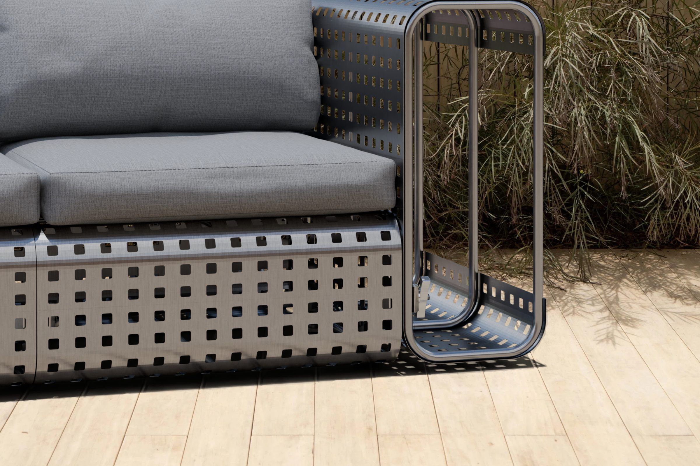
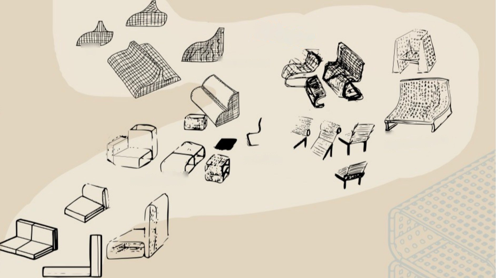
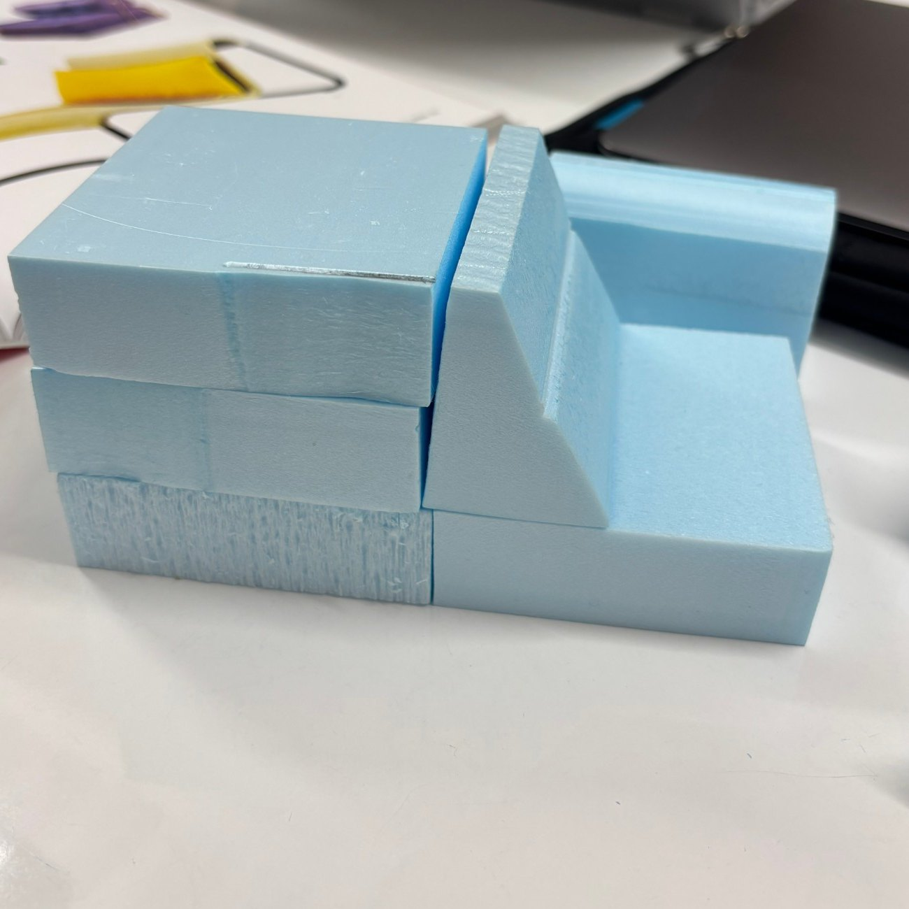
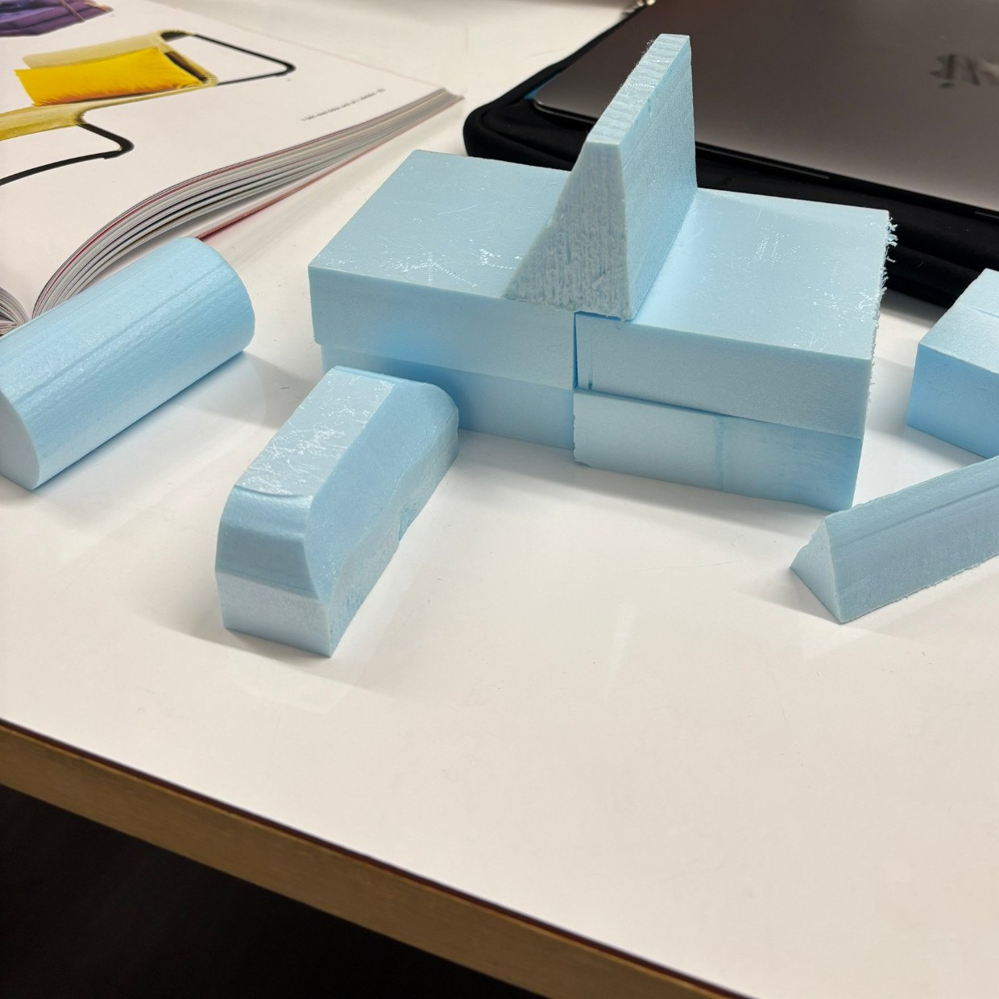
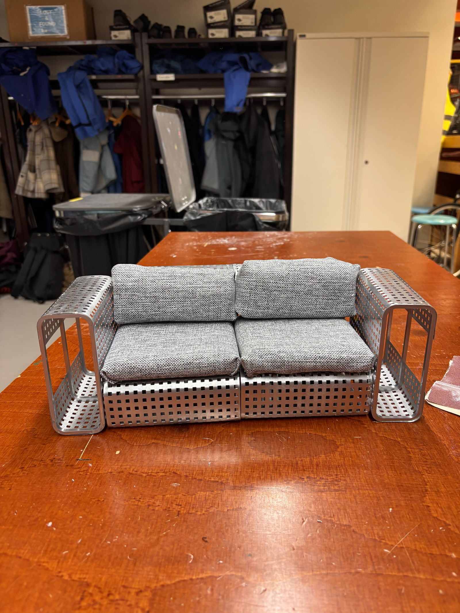
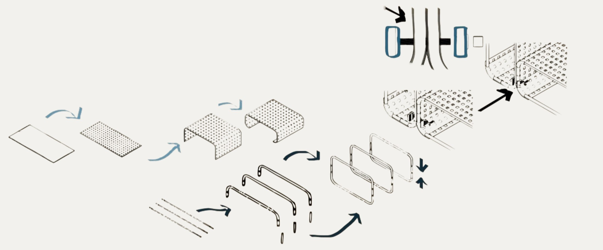
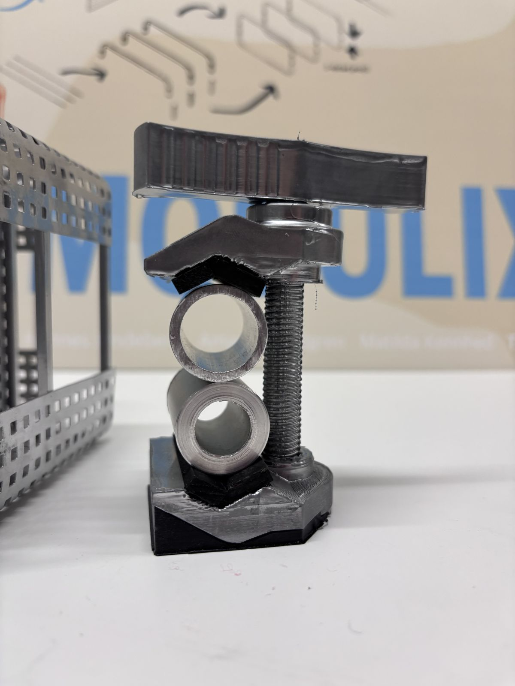
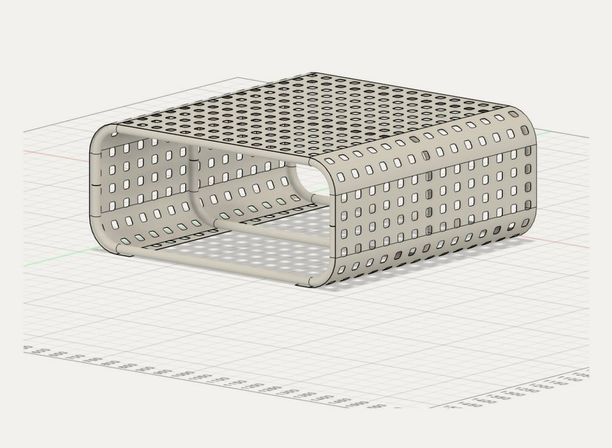
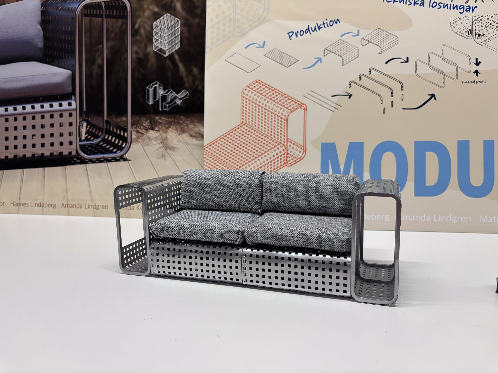

Materials for Design · 2025
Modulix
Modular outdoor furniture in perforated aluminium, designed to get people out into their gardens.
Introduction
One aluminium module, clamped together, becomes a side table, a sofa or a sun lounger, and stacks away when summer ends.
Outdoor furniture for a customer group in Vadstena that handles rain and changing weather, dries fast and never needs carrying in.
Two seat modules with upright modules as armrests and backrest, plus cushions. Drag to rotate.
Process
From sketch to sheet metal.
Brutalist forms
A wide start with heavy, mesh-like shapes from the theme.
Repeating forms
One shape used again and again to build different pieces.
Module system
A single rounded module that becomes every piece of furniture.
Models
Foam blocks, then a sheet-metal scale model, to test proportions and joints.

From brutalist forms to repeating forms to a module system.


Foam models testing how the modules combine.


Building the scale model.
Technical details
Light, dry and simple to assemble.
- Module
- Perforated aluminium sheet, about 8.5 kg, light enough to carry and stack
- Production
- Cut from flat sheet, perforated and bent twice, with an inner frame of bent tube in a two-part profile
- Clamp and feet
- Powder-coated steel with EPDM rubber, protecting both the module and the deck
- Mounting
- Modules bolt together through the side walls with one clamp
- Cushions
- Polyester mesh with quick-dry foam and a cover in solution-dyed polyester

Production from flat sheet to module, and the clamp that joins modules.


Create, rebuild and adapt. Modulix makes it possible.

Next project
ORIS →